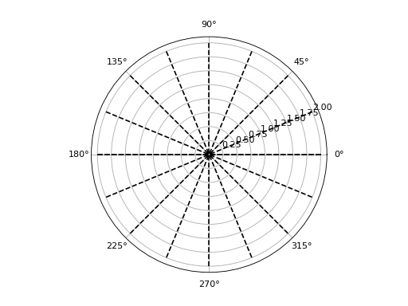

基本概念¶
本章介绍微分方程的基础内容．
微分方程的基本定义¶
定义：常微分方程
如果未知函数  是多元函数，那么拥有类似形式的含偏导数的方程叫 偏微分方程 (partial differential equation, PDE)；偏微分方程的内容不在本手册的讨论范畴．
是多元函数，那么拥有类似形式的含偏导数的方程叫 偏微分方程 (partial differential equation, PDE)；偏微分方程的内容不在本手册的讨论范畴．
阶与线性的概念¶
常微分方程式 (1) 中出现的最高阶的 的导数的阶数，称为该微分方程的 阶 (order)．
例子：常微分方程
以下均为常微分方程：
其中， 对  的一阶导数，我们通常记成
的一阶导数，我们通常记成  或 ；如果自变量没有歧义，也可以记成上例中 (3) 的形式，即 ．对于 的
或 ；如果自变量没有歧义，也可以记成上例中 (3) 的形式，即 ．对于 的  阶导数，我们通常记为 或者 ；如果 较小，也可以参照上例 (3) 中三阶导数的记法．
阶导数，我们通常记为 或者 ；如果 较小，也可以参照上例 (3) 中三阶导数的记法．
式 (1) 中，如果右侧的函数 对未知函数 与其各阶导数而言是一次的，则称式 (1) 为 线性常微分方程 (linear ODE)；否则，称其为 非线性常微分方程 (nonlinear ODE)．
通过阶给方程分类，上例中的 (1) 与 (2) 是一阶微分方程，而 (3) 是三阶微分方程．通过线性与否分类，上例中的 (1) 是线性微分方程，而 (2) 与 (3) 是非线性微分方程．更详细的叙述是将两者结合，例如：例中 (1) 是一阶线性常微分方程．
微分方程的解¶
下面定义微分方程的解：
定义：微分方程的解
 上连续且有
上连续且有 
例如，我们容易验证， 是微分方程 的一个解．我们还发现，对于任意常数  ，函数 都是该方程的解．
，函数 都是该方程的解．
通解、特解与初值问题¶
定义：通解、特解
 ，则称该解为方程的 通解 (general solution)；如果方程的解 不含任意常数，则称该解为方程的 特解 (particular solution)．
，则称该解为方程的 通解 (general solution)；如果方程的解 不含任意常数，则称该解为方程的 特解 (particular solution)．显然，如果得到了通解，又能将其所有的任意常数确定下来，通解就会变成特解．在上例的微分方程中 ， 就是它的通解．至于特解，一个典型的例子是初值问题：
定义：初值问题
对
其中 是自变量所确定的初值，而 是未知函数
例如，如果已知微分方程 及其在  处的初值条件
处的初值条件  ，那么它们就组成了一个初值问题，其解为 ．该解是该方程的特解．至于求解微分方程的方法与解的唯一性，我们在下文讨论．
，那么它们就组成了一个初值问题，其解为 ．该解是该方程的特解．至于求解微分方程的方法与解的唯一性，我们在下文讨论．
微分方程及其解的几何意义¶
从最简单的一阶微分方程开始，我们来简要阐述微分方程及其解的几何意义．
定义：积分曲线
 上存在解 ，那么该解 在
上存在解 ，那么该解 在  平面上的图形是一条光滑的曲线
平面上的图形是一条光滑的曲线 积分曲线与方向场¶
结合导数的定义，我们知道对于积分曲线  上任意一点 处的切线斜率即为 ．由此可知：即使我们不能直接求得曲线 ，我们也可以写出该曲线在其上任意一点处的切线方程．
上任意一点 处的切线斜率即为 ．由此可知：即使我们不能直接求得曲线 ，我们也可以写出该曲线在其上任意一点处的切线方程．
在区域  内的每个点
内的每个点  ，我们均可用上述方法确定积分曲线（若存在）在该点的切线方向．在点 处画出一个极短的线段，用以标明曲线 在该点处的切线斜率方向，这样的线段称为微分方程在点 处的 线素；区域 与其上全体线素，称为微分方程的 方向场 (direction field)，也称 线素场 (slope field)．在绘制方向场时，通常用等式 来绘制由常数 确定的曲线 ，称为方向场的 等倾线 (isocline)．绘制的例子见 方向场的绘制 一节．
，我们均可用上述方法确定积分曲线（若存在）在该点的切线方向．在点 处画出一个极短的线段，用以标明曲线 在该点处的切线斜率方向，这样的线段称为微分方程在点 处的 线素；区域 与其上全体线素，称为微分方程的 方向场 (direction field)，也称 线素场 (slope field)．在绘制方向场时，通常用等式 来绘制由常数 确定的曲线 ，称为方向场的 等倾线 (isocline)．绘制的例子见 方向场的绘制 一节．
显然，方程的任何积分曲线 与它的线素场吻合；反之，如果区域 上存在一条光滑的曲线
与方向场吻合，那么 是方程 (2) 的一条积分曲线．
方向场的绘制¶
上文叙述了如何使用线素和等倾线来绘制方向场．但有一点尚需说明：微分方程 (2) 右侧的函数 有时或许是未定式，这是绘制时可能遇到的特殊情况．例如，微分方程通常的对称形式：
容易看出，如果在点 附近绘制该微分方程的线素，有三种可能：
- 如果 ，那么可以利用 来绘制；
- 如果
 ，那么可以利用
，那么可以利用  来绘制；
来绘制； - 如果 ，那么 与 在点 处均是未定式，该点的线素没有意义．这时，我们把 称为 奇异点 (singularity, or singular point)．
例子：方向场的绘制
绘制下述微分方程的方向场：
易知，原点是奇异点．对于平面上的其他点，我们可以用等倾线 来帮助绘制．该式说明线素斜率为 的点，是由直线 组成的．由所有任意实数 组成的直线簇 ，就构成了该微分方程的方向场（或称确定了微分方程的积分曲线）．绘制的方向场如下图：
(Source code, png, hires.png, pdf)
其实，直线 上任取一点，我们能确定的是其与原点连线的斜率为 ，即 ；也可以用任意常数
可以验证，对原微分方程的变式 积分后便得 ．
![\frac{D[\varphi, \varphi', \ldots, \varphi^{(n)}]}{D[C_1,C_2,\ldots,C_n]} =
\begin{vmatrix}
\frac{\partial \varphi}{\partial C_1} & \frac{\partial \varphi}{\partial C_2} & \cdots & \frac{\partial \varphi}{\partial C_n} \\[8pt]
\frac{\partial \varphi'}{\partial C_1} & \frac{\partial \varphi'}{\partial C_2} & \cdots & \frac{\partial \varphi'}{\partial C_n} \\[8pt]
\vdots & \vdots & & \vdots \\[8pt]
\frac{\partial \varphi^{(n)}}{\partial C_1} & \frac{\partial \varphi^{(n)}}{\partial C_2} & \cdots & \frac{\partial \varphi^{(n)}}{\partial C_n} \\
\end{vmatrix} \neq 0.](_images/math/5b4f39e1f2a43b671b187b3d4267adc0ee3ce10b.svg)
{kind=link}
{kind=link}